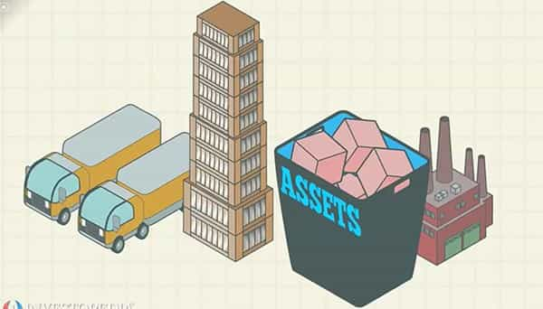

André is a young European who left his decaying country in 2012 for greener pastures. He enjoys exploring subterranean places, reading about a host of interconnected topics, and yearns for Tradition.


No one reaches power by chance. When men were pater familias, thus having power and responsibility at home, they could only reach this position after having grown beyond the boyish, parents-dependent position. Just as small children develop the ability—or power—to walk by wavering on feet, boys of before learned to be men, before a rite of passage made them so.
Those who occupy positions of power manage to keep these because they satisfy particular and, more often than not, untold conditions. Some of these may seem obvious: the strong man who can lift a lot and brawl without being at immediate risk of serious injury can also put himself in a variety of situations that scrawnier individuals will rather avoid. Other times the domination is subtler, as in the case of women toying with male desire, managing to keep men unsure but still hoping and willing to pursue them. Likewise, a particularly wealthy individual may seem obviously “powerful” when he buys what you can’t, yet an opaque administration that hides who decides to pay for what and how much is far more dangerous.
This piece is about how the current elite manages to dominate us and maintain its position. A variety of factors is involved, which makes any simplistic explanation deceptive and illusory. Nonetheless, and even if they have to be smart, they are not that smart. Behind the smokescreen of “it’s too complex for you” and other showbiz society deception are stuff you can find in mainstream history or personal improvement books.
The globalists may be genuinely convinced they will make the world better, enjoy views of people eating other people, or both. It doesn’t matter as much as one may think. What matters first and foremost is being shrewd, knowledgeable about an array of fields that matter in human life—say, money, seduction, procedures, how to build this or that—and the ability to perceive opportunities to act and seize them.
How do you become shrewd? Here we see a combination of factors: having shrewd parents or family who teach by example and being free from mental blocks that prevent realistic observation or the identification of possibility matters. Experience matters as well, but having the proper concepts and rules of thumb to make sense out of it is important, too…
I gained shrewdness by reading Robert Greene’s (in?)famous 48 Laws of Power, picking up girls and looking at people less innocent than my younger self. Some become shrewd through navigating the political swamp or office politics. The most important example, though, can be found in one of the most powerful communities of our times: the Jews.
Historically, Jews were first and foremost merchants. When the Roman Empire crumbled, they already had centuries of experience in buying low, selling high, taking risks, spotting potential employees and everything else. Many rabbis have also been experts in bookkeeping. At the dawn of modernity, Jewish merchants were shrewd enough to introduce propaganda in a world where it was perceived as encroaching on your neighbour’s subsistence. They could also sell used or cheaper goods for better margins, living like paupers from very low margins to sell at the cheapest price and outcompete everyone else. Then, as soon as the ghetto barriers were raised, they took over the economy, making it more abstract and global in the process.
What matters here is that Jews took over because they had spotted the opportunity to do so. They have waited for centuries, and when the Western civilization started shaking, their sly mindset allowed them to appropriate it eagerly. Today, many Jews carefully hone their semantics-and-banking edge: I remember of a banker who claimed to study the Talmud every morning for at least two hours before going to work, and the former International Monetary Fund director Dominique Strauss-Kahn—yes, the alleged maid rapist—is said to have taught his sons to pilpul while taking their breakfast.

Since at least the end of the eighteenth century, modernity went hand in hand with the commodification of everything. That is, everything is part of a market, has a market value, and can be traded. Political favours, deputy votes, prestige or reputation, exclusive access to opportunities, up to public attention have become transactional, any type of capital being more or less convertible into another type. Girls who manage their looks, Tinder options and career opportunities are administering their non-financial capital.
Not incidentally, the rise of “capitalism” in this extended sense went along with an escalation of crookedness. The economy has been made opaque and complicated so that we let it to unknown, shadowy bureaucrats. Money has been reduced to currency paper, coinages have been debased, major market actors often gauged the economy by either hoarding a resource or flooding everyone with it in order to increase or decrease its price.
Once again, “capitalism” is a mindset: a true capitalist can have much of his wealth confiscated and still manage to dissimulate it or get it back. Jews often did so, by entrusting Christian front men to guard it when they were under fire, or occupying particular niches or spotting opportunities to recover if they had really lost it.
The ability to manage capital supersedes it. Inert raw materials, fleeting reputations, abilities without the appropriate context, are not much per se, and will quickly flee from whoever fails to use them. Africa will never be autonomous, because it has always needed and will always need non-Africans to set its value off—Arabs trading “ebony wood”, whites developing pretty much everything agricultural and industrial, and now the Chinese doing the same.
Perhaps mastering the Jewish mentality has become a necessary condition for succeeding today. Of course, mastering it does not equate with being converted into or limiting oneself to it, but rather with riding capital better than the original capitalists themselves.
When you are shrewd enough to spot opportunities and have something to put on the table, who will you visit? Do you know people who are “interesting” and share good values? Notice that multiculturalism, Leftist witch-hunts, and likely an individualism gone wild—too many individuals trying to take advantage from the closest neighbour—have driven trust to a historical low. Instead of showing a united front to others, whites have historically rebuffed each other more than anyone else on Earth, from the two World Wars to ideological rows. As we got alienated from a murky, rash and seemingly hopeless world, fleeing in MGTOWism was tempting… and when it meant not networking, it meant isolation, weakness, and dependence from Big State and Big Corp instead of family and friends.
The networking imperative may seem a trite. It isn’t: when sensitive information, precise know-how or expensive goods are concerned, people rely on people they know and can trust. Communities succeed over individuals, whether in warfare or free markets. The most interesting investments are debated and shared among reputed individuals far from the stock exchanges, which imply the existence of a network and/or a world where reputation matters. Likewise, say you want to invest in a skyscraper under construction: the minimum investment threshold is probably beyond your wealth—yet if there were five of you knowing how to create the appropriate structure, you could pool your money and invest without getting screwed by a remote mutual funds manager.
The current elite wants us to be lonely, atomized, deprived of autonomy, forced to trade with and depend from assholes, and following fads instead of making proper choices. It is up to us to be more like the globalists and less like the globalists want us to be.
The university, media, schools, political parties, Fortune 500 corporations and many other structures are institutions as they all determine social organization, what succeeds, what fails and who is accepted or not. Heading institutions means power over society, wielding advantages and rents, promoting some while discriminating others. Far-left Jewish activists did just that: charismatic patriarchs Boas and Freud paved the way for thousands of “little grey men of the world” to erode the foundations of society and take it over by whatever power leverage they could grab.
The “long march through the institutions” is not an end in itself. The endgame of whoever takes the institutions is to mold them according to his own character or ethos. The commodification of the world, the rise of finance and “capitalism” in the wide sense, emanate from the Jews’—whether “truly Jewish” or “Jewified” through Protestantism—peculiar way of being. People with a different character tend to complain about how so many ignore honour today, or how generosity and disinterested actions get systematically exploited. Different elites relied on different institutions. But even then, remember than one elite replaces another by “swallowing” it and its needs—Jewish merchants were efficient, grand scale army suppliers and money lenders to European kings before the 1789 revolution could happen.
This one has been well-researched during the twentieth century. Pavlovian associations, strategic use of symbols, subtle propaganda through “culture”, infomercials, fashions and media spins rather than overt advertisements, steering norms and deciding what is acceptable or not or what are the appropriate framings and unsaid premises. As the naive progressives were discovering new medicine or perfecting architecture, more cunning ones were working on the dark arts of psychology. This is how we got the blue pill conditioning, as well as the always-criticize-the-right, save-a-ho or holiness-lies-in-leftism outlooks.
Why is being conservative a taboo? Why is it “normal” to use negative stereotypes about conservatism? Why do women and liberals have a right to put people into a hierarchy as they want while still yelling about “equality”? None of these is logical or obvious. All of these are a product of the conditioning we had under the guise of education or (post-60s) normality.
Of course, freeing ourselves from leftist, anti-white, anti-male, anti-Western conditionings does not mean rejecting all conditionings: the majority will always need some Brahmans to give them values and a proper outlook. Autonomy is a path for the few who can assume the responsibilities going along with it. Thus, even if we manage to grasp the world beyond semantic frames and smokescreens, ideals like neomasculinity, sovereignty, a complete and truthful anthropology, or a strong middle class should provide new premises and landmarks.
All the above are, I think, the fundamental and necessary trunk of how to take over—as they did it and as we could do. Here are some shorter-lived points that they pushed forward according to their particular character and interests. I do not see us replicating these. Rather, the following should be undone, yet they still appear as clear power moves once we got used to look at these like that:
Of course, they are not exempt from defects, and the more they lose control, the more their shortcomings become apparent. In a nutshell, I would say an elite is at risk of undoing itself when it lets itself go to arrogance, hubris and greed.
Arrogance blinds them to reality, thus undoing what shrewdness had realized and unveiling a haughtiness that everyone resents. The still powerful has shown a lot of it lately: in the US, and now in France, they absolutely insist to impose their favourite puppet candidate at the expense of other less favorite but better equipped sellouts, and their media feverishly run idle. Likewise, SJWs keep doubling down and lecturing us even when they are caught red-handed into lying or manipulating, which makes them quite irritating even to the average blue pilled.
Their power plays also tend to turn against them, as those whom they promoted become their enemies—from the Muslim brotherhood to anti-white activists, or Trump, the seeming buffoon who managed to outsmart the whole establishment.
Expose them, discredit them, make yourself independent and crafty, and if we manage to do it well, their oversized Babel towers and “All-Seeing Eye” will burn in Agni’s rekindled fires.
Read Next: Does The Hollywood Elite Use Rituals And Sexual Blackmail To Keep Its Stars In Line?